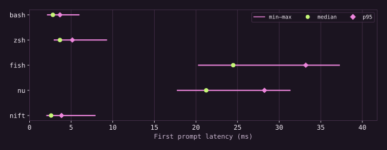
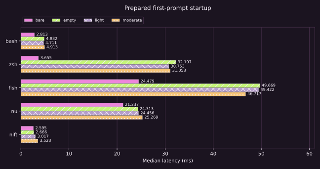
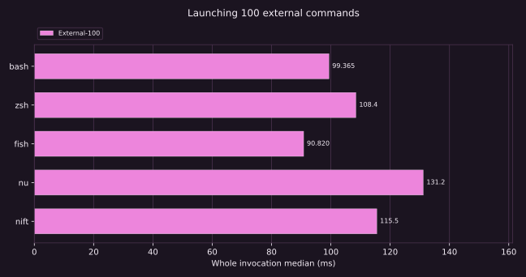

Experiment 03 / startup & shells
How long until
the prompt is ready?
Every invocation pays a startup cost. We measured Bash, Zsh, Fish, Nushell and Nift, made RC work explicit, and kept the stalls visible.
Stages explain the model; individual stage durations were not measured. Only the total startup boundary is timed.
Startup / distributions
A median does not show every stall.

| Shell | Exit ms | Trivial ms | Prompt ms | Prompt p95 | Prompt p99 |
|---|---|---|---|---|---|
| bash | 2.226 | 2.187 | 3.085 | 4.389 | 10.181 |
| zsh | 2.823 | 2.795 | 4.066 | 6.018 | 9.531 |
| fish | 2.839 | 2.913 | 28.816 | 38.159 | 63.973 |
| nu | 17.478 | 17.291 | 24.791 | 34.054 | 50.740 |
| nift | 2.719 | 2.723 | 2.846 | 4.128 | 9.780 |
Bash’s bare prompt median was 3.085 ms and Zsh’s was 4.066 ms. Their p99 values were 10.181 and 9.531 ms; Nift’s was 9.780 ms. Tails remain visible even where medians are small.
Download the SVG figure · PNG figure.


Exit/trivial use C-supervised non-interactive command evaluation. Prompt startup uses a real controlling PTY, excludes Python/bridge launch but includes PTY forwarding and minimal xterm query handling, then validates RC state. Those boundaries differ; subtracting them would not recover RC cost.
Configuration is a variable
Bare → Empty → Light → Moderate
Light/moderate also prepend one PATH entry and perform a HOME-existence conditional. A post-prompt oracle validates representative environment, function and conditional state. No aliases or plugin managers are forced onto shells without equivalent facilities.
| Shell | Bare ms | Empty ms | Light ms | Moderate ms |
|---|---|---|---|---|
| bash | 3.085 | 5.341 | 5.322 | 5.662 |
| zsh | 4.066 | 35.923 | 36.027 | 36.458 |
| fish | 28.816 | 59.747 | 61.622 | 57.497 |
| nu | 24.791 | 28.517 | 29.359 | 30.845 |
| nift | 2.846 | 2.973 | 3.487 | 4.082 |
| Shell | Bare ms | Empty ms | Light ms | Moderate ms |
|---|---|---|---|---|
| bash | 2.930 | 5.022 | 5.251 | 5.690 |
| zsh | 4.172 | 679.8 | 671.1 | 669.8 |
| fish | 28.638 | 106.2 | 97.811 | 103.6 |
| nu | 24.078 | 28.414 | 28.668 | 29.602 |
| nift | 2.933 | 2.913 | 3.480 | 4.091 |



Login matrix
| Shell | Bare ms | Empty ms | Light ms | Moderate ms |
|---|---|---|---|---|
| bash | 3.049 | 27.186 | 27.224 | 27.568 |
| zsh | 4.062 | 35.971 | 36.196 | 37.097 |
| fish | 30.338 | 60.488 | 60.383 | 60.300 |
| nu | 24.605 | 28.896 | 29.662 | 31.133 |
Fresh configured Zsh medians were 679.8 ms for empty user files and 669.8 ms for moderate files. Ubuntu’s normal system completion setup rebuilds per fresh HOME; the normal-path matrix includes that work.
Bare means no user config. Zsh still reads compiled system zshenv. Normal/login paths retain distro-wide configuration. Nift uses isolated HOME because there is no no-RC option; Nu keeps its standard library. Direct startup measurements are never derived by subtracting RC time. Fresh application directories reset config/cache/history state without flushing OS caches.
Orchestration & native work
The shell has work to do.
| Workload | bash | zsh | fish | nu | nift |
|---|---|---|---|---|---|
| native-sum | 8.076 | 4.726 | 180.2 | 19.351 | 4.485 |
| function-string | 2.208 | 2.809 | 3.251 | 18.121 | 3.060 |
| external-100 | 99.365 | 108.4 | 90.820 | 131.2 | 115.5 |
| short-pipeline | 4.948 | 5.739 | 5.557 | 21.467 | 6.282 |
| command-capture | 3.854 | 4.460 | 4.625 | 19.195 | 4.742 |
| file-roundtrip | 5.033 | 5.607 | 5.636 | 21.669 | 6.366 |
Sum uses assignments, arithmetic, conditions and loops. Function-string defines a callable and changes case/replaces characters. External-100 runs the same absolute /usr/bin/true 100 times. Pipeline uses identical printf/tr executables; Nift uses structured run()/cmd().pipe() capture. The file row executes identical /usr/bin/printf and /usr/bin/cat helpers in all five shells; writing uses POSIX redirection, Nu save or Nift’s file API after structured capture. It measures that mixed orchestration/I/O workflow, not pure native file-read throughput. Equivalent output does not imply identical internal architecture.
Bash’s trivial invocation was 2.187 ms versus Nift’s 2.723 ms. Fish’s external-100 median was 90.820 ms versus Nift’s 115.5 ms. These rows show why prompt latency alone cannot rank shell performance.



| Shell | Trivial RSS MiB |
|---|---|
| bash | 3.438 |
| zsh | 3.625 |
| fish | 5.375 |
| nu | 24.875 |
| nift | 5.750 |
PTY RSS is omitted because prompt timing stops before oracle/teardown accounting. Concurrent-job, long-pipeline and separate default-dotfile distributions remain coverage gaps; traversal/data work appears in scripting.
Correctness / limits
Fast and wrong does not qualify.
| Calibration | Median ms | p95 ms |
|---|---|---|
| process-floor | 0.992 | 1.518 |
| pty-small-heap | 1.405 | 1.669 |
| pty-128MiB-heap | 1.691 | 1.981 |
The compiled PTY bridge avoids Python heap fork latency. Minimal probe measurements disclose remaining launch/forwarding/scheduling overhead; differences near that floor need care. Initial Python-PTY series are retained as diagnostics and excluded by a documented method revision, not by selective sample removal.
| Diagnostic | User RC body median ms | Min–max ms |
|---|---|---|
| bash/light | 0.280 | 0.202–0.596 |
| bash/moderate | 0.574 | 0.472–1.027 |
| zsh/light | 0.225 | 0.181–0.543 |
| zsh/moderate | 0.520 | 0.425–0.977 |
Independent Bash/Zsh EPOCHREALTIME clocks instrument synthetic user RC source/parse/execute only, excluding system RC. Clock/read overhead remains; other shells do not have an equivalent timer/parser boundary in this diagnostic. No cross-shell RC-body ranking or subtraction is used. Separate complete-state certification checks every variable and function plus the conditional and PATH prefix in all 18 light/moderate login/non-login cases.
Every invocation must exit successfully and yield expected output. PTY timing ends at prompt arrival, followed by its command/state oracle. Failures retain non-publishable evidence. Prepared startup cells contain 100 samples; fresh-state startup cells contain 30; both have 3 retained warmups. Configured fresh Zsh rebuilds system completion state, so its expensive series uses 30 samples, frozen before collection. No sample was excluded. Work cells contain 10 plus 3. Order rotates each round.
An allowlisted environment and job-specific HOME/XDG/ZDOTDIR prevent BASH_ENV, ENV, inherited functions, personal dotfiles or tokens from entering measured processes. Terminal queries receive documented xterm responses. OSC 133 prompt completion is used where available, otherwise prompt suffix detection; the oracle proves the shell is usable afterwards. This terminal model affects interactive startup and limits generalisation.
Configuration discovery, parsing, history and lazy initialization can interact. No additive RC decomposition is justified. Rich runtime features and low bare startup answer different engineering questions.
Frozen environment
One node. One logical CPU.
g6-standard-4, shared CPU; all measured processes pinned to CPU 0.
Virtual scheduling and neighbouring tenants may affect latency.
Kernel 6.8.0-134-generic; Python 3.12.3.
Tool/fixture preparation was outside timing. OS caches were uncontrolled. State-reset scope is suite-specific; no machine-cold boot is claimed. Suite revision: e5078b5a79e33b09e5d23af8946ccc264867b385. Raw evidence records CPU/RAM inventory, binary hashes and exact commands. Provisioning and verified teardown record. System startup-file hashes and distro package versions support reproduction. Superseded series archive and evidence notes retain the earlier PTY method, website pins and scripting corpus; these are excluded from the official summaries.
Versions
Tested systems
| System | Measured version |
|---|---|
| bash | GNU bash, version 5.2.21(1)-release (x86_64-pc-linux-gnu) |
| zsh | zsh 5.9 (x86_64-ubuntu-linux-gnu) |
| fish | fish, version 4.9.3 |
| nu | 0.116.1 |
| nift | Nift v4.7.2 |
Reproduce / scrutinise
Every sample is retained.
shell-repeated.json · shell-application-cold.json · calibration.json · rc-certification.json · rc-body.json
Independent clean-checkout reproduction: validated raw run.
Suite, audit and provisioning instructions ↗. Check out the exact measured suite revision and acquire its pinned tools. scripts/summarize.py regenerates summaries from one validated run; historical machines and revisions are never merged.
python3 scripts/benchmark.py --nift /opt/campaign/tools/bin/nift --samples 100 --work-samples 10 --warmups 3 --output results/run.json # Fresh-state run: --state application-cold --samples 30 --work-samples 10 --warmups 3.
Warmups are retained separately. Correctness failures/timeouts stop publication. Corrected observations are all retained; superseded method, tool-pin and workload series are archived as diagnostics with reasons for exclusion. Percentiles use linear interpolation and describe this sample distribution; they are not confidence intervals.
Conclusion
Direct startup evidence, with its boundaries.
This matrix is defensible for the exact invocation/configuration paths and small workloads reported. It does not establish a universally fastest shell, feature parity, or machine-cold performance.
Nift Benchmarks